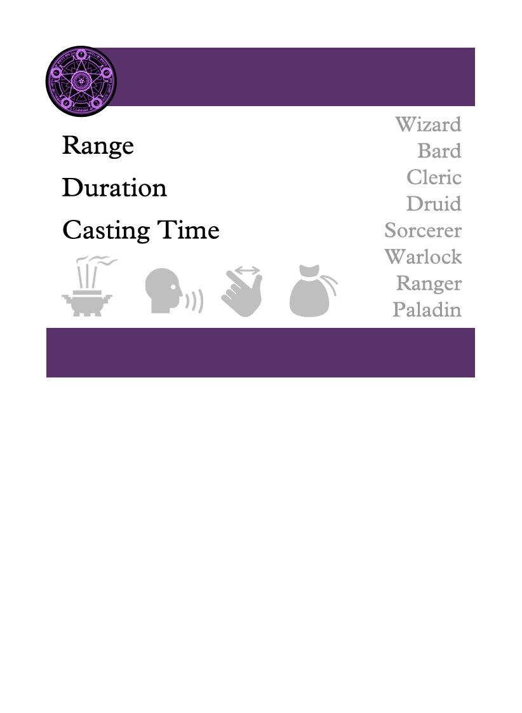
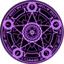
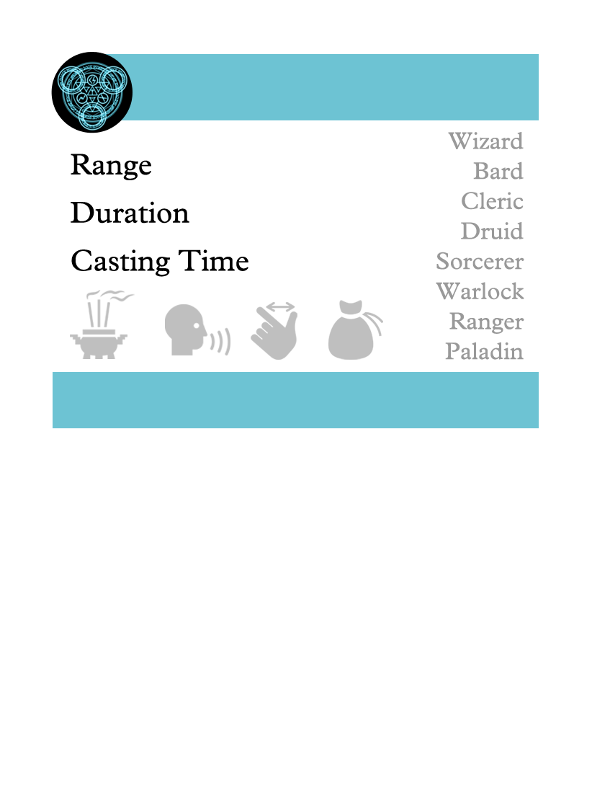
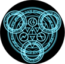
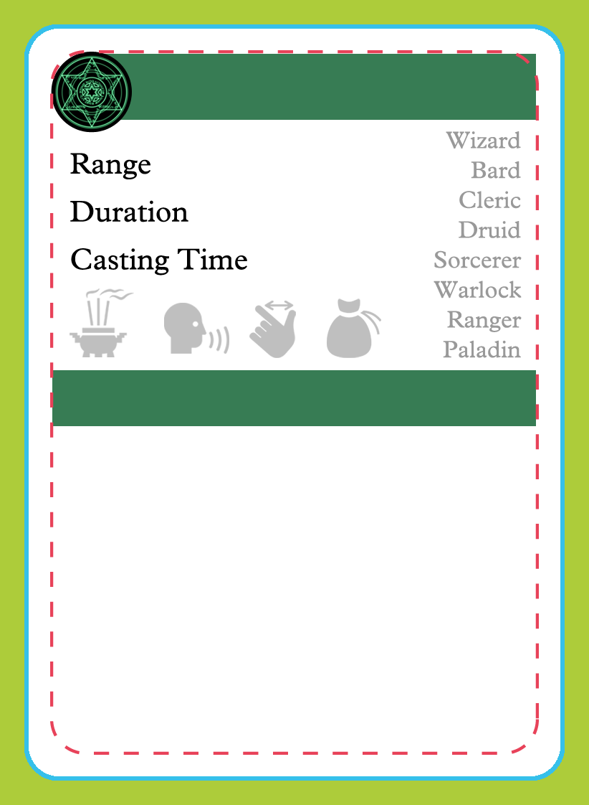
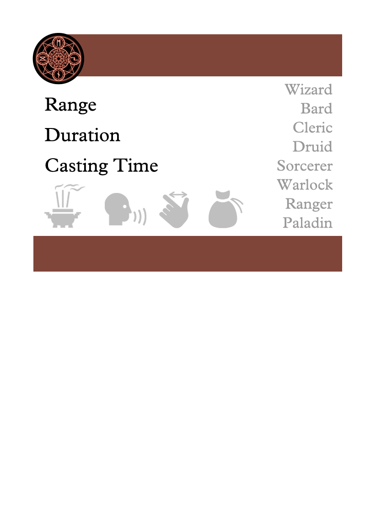
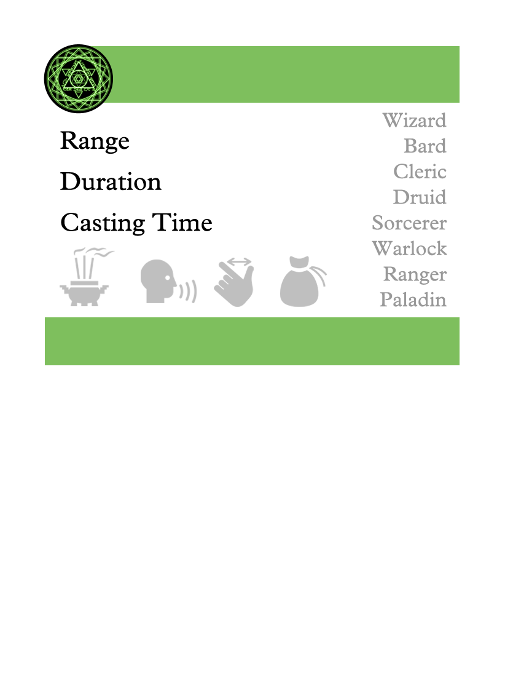
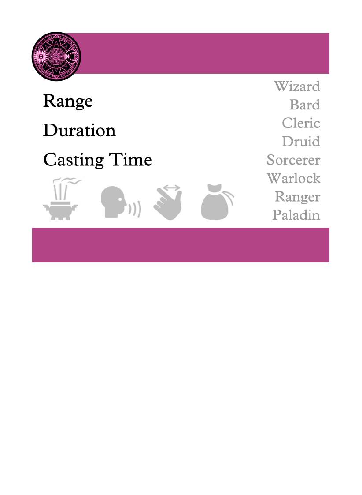
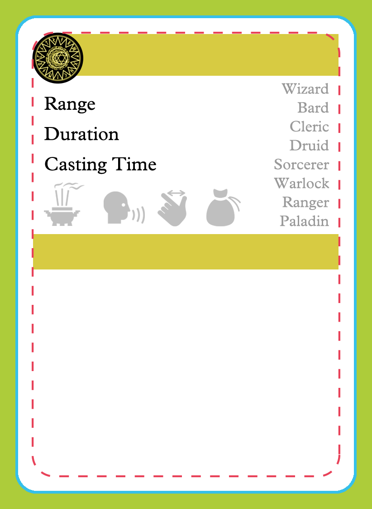

Acid Splash
Cantrip
60 feet
Instantaneous
1 action
You hurl a bubble of acid. Choose one creature you can see within range, or choose two creatures you can see within range that are within 5 feet of each other. A target must succeed on a Dexterity saving throw or take {@damage 1d6} acid damage.
This spell's damage increases by {@damage 1d6} when you reach 5th level ({@damage 2d6}), 11th level ({@damage 3d6}), and 17th level ({@damage 4d6}).
PHB 211


Blade Ward
Cantrip
You extend your hand and trace a sigil of warding in the air. Until the end of your next turn, you have resistance against bludgeoning, piercing, and slashing damage dealt by weapon attacks.
PHB 218


Booming Blade
Cantrip
a melee weapon worth at least 1 sp
You brandish the weapon used in the spell's casting and make a melee attack with it against one creature within 5 feet of you. On a hit, the target suffers the weapon attack's normal effects and then becomes sheathed in booming energy until the start of your next turn. If the target willingly moves 5 feet or more before then, the target takes {@damage 1d8} thunder damage, and the spell ends.
This spell's damage increases when you reach certain levels. At 5th level, the melee attack deals an extra {@damage 1d8} thunder damage to the target on a hit, and the damage the target takes for moving increases to {@damage 2d8}. Both damage rolls increase by 1d8 at 11th level ({@damage 2d8} and {@damage 3d8}) and again at 17th level ({@damage 3d8} and {@damage 4d8}).
TCE 106


Chill Touch
Cantrip
120 feet
1 round
1 action
You create a ghostly, skeletal hand in the space of a creature within range. Make a ranged spell attack against the creature to assail it with the chill of the grave. On a hit, the target takes {@damage 1d8} necrotic damage, and it can't regain hit points until the start of your next turn. Until then, the hand clings to the target.
If you hit an undead target, it also has disadvantage on attack rolls against you until the end of your next turn.
This spell's damage increases by {@damage 1d8} when you reach 5th level ({@damage 2d8}), 11th level ({@damage 3d8}), and 17th level ({@damage 4d8}).
PHB 221

Control Flames
Cantrip
60 feet
Instantaneous
1 action
You choose nonmagical flame that you can see within range and that fits within a 5-foot cube. You affect it in one of the following ways:
- You instantaneously expand the flame 5 feet in one direction, provided that wood or other fuel is present in the new location.
- You instantaneously extinguish the flames within the cube.
- You double or halve the area of bright light and dim light cast by the flame, change its color, or both. The change lasts for 1 hour.
- You cause simple shapes—such as the vague form of a creature, an inanimate object, or a location—to appear within the flames and animate as you like. The shapes last for 1 hour.
If you cast this spell multiple times, you can have up to three non-instantaneous effects created by it active at a time, and you can dismiss such an effect as an action.
XGE 152
Create Bonfire
Cantrip
60 feet
1 minute
1 action
You create a bonfire on ground that you can see within range. Until the spell ends, the magic bonfire fills a 5-foot cube. Any creature in the bonfire's space when you cast the spell must succeed on a Dexterity saving throw or take {@damage 1d8} fire damage. A creature must also make the saving throw when it moves into the bonfire's space for the first time on a turn or ends its turn there.
The bonfire ignites flammable objects in its area that aren't being worn or carried.
The spell's damage increases by {@damage 1d8} when you reach 5th level ({@damage 2d8}), 11th level ({@damage 3d8}), and 17th level ({@damage 4d8}).
XGE 152
Dancing Lights
Cantrip
120 feet
1 minute
1 action
a bit of phosphorus or wychwood, or a glowworm
You create up to four torch-sized lights within range, making them appear as torches, lanterns, or glowing orbs that hover in the air for the duration. You can also combine the four lights into one glowing vaguely humanoid form of Medium size. Whichever form you choose, each light sheds dim light in a 10-foot radius.
As a bonus action on your turn, you can move the lights up to 60 feet to a new spot within range. A light must be within 20 feet of another light created by this spell, and a light winks out if it exceeds the spell's range.
PHB 230
Druidcraft
Cantrip
30 feet
Instantaneous
1 action
Whispering to the spirits of nature, you create one of the following effects within range:
- You create a tiny, harmless sensory effect that predicts what the weather will be at your location for the next 24 hours. The effect might manifest as a golden orb for clear skies, a cloud for rain, falling snowflakes for snow, and so on. This effect persists for 1 round.
- You instantly make a flower blossom, a seed pod open, or a leaf bud bloom.
- You create an instantaneous, harmless sensory effect, such as falling leaves, a puff of wind, the sound of a small animal, or the faint odor of skunk. The effect must fit in a 5-foot cube.
- You instantly light or snuff out a candle, a torch, or a small campfire.
PHB 236
Eldritch Blast
Cantrip
120 feet
Instantaneous
1 action
A beam of crackling energy streaks toward a creature within range. Make a ranged spell attack against the target. On a hit, the target takes {@damage 1d10} force damage.
The spell creates more than one beam when you reach higher levels: two beams at 5th level, three beams at 11th level, and four beams at 17th level. You can direct the beams at the same target or at different ones. Make a separate attack roll for each beam.
PHB 237
Fire Bolt
Cantrip
120 feet
Instantaneous
1 action
You hurl a mote of fire at a creature or object within range. Make a ranged spell attack against the target. On a hit, the target takes {@damage 1d10} fire damage. A flammable object hit by this spell ignites if it isn't being worn or carried.
This spell's damage increases by {@damage 1d10} when you reach 5th level ({@damage 2d10}), 11th level ({@damage 3d10}), and 17th level ({@damage 4d10}).
PHB 242


Friends
Cantrip
a small amount of makeup applied to the face as this spell is cast
For the duration, you have advantage on all Charisma checks directed at one creature of your choice that isn't hostile toward you. When the spell ends, the creature realizes that you used magic to influence its mood and becomes hostile toward you. A creature prone to violence might attack you. Another creature might seek retribution in other ways (at the DM's discretion), depending on the nature of your interaction with it.
PHB 244
Frostbite
Cantrip
60 feet
Instantaneous
1 action
You cause numbing frost to form on one creature that you can see within range. The target must make a Constitution saving throw. On a failed save, the target takes {@damage 1d6} cold damage, and it has disadvantage on the next weapon attack roll it makes before the end of its next turn.
The spell's damage increases by {@damage 1d6} when you reach 5th level ({@damage 2d6}), 11th level ({@damage 3d6}), and 17th level ({@damage 4d6}).
XGE 156
Green-Flame Blade
Cantrip
5 feet
Instantaneous
1 action
a melee weapon worth at least 1 sp
You brandish the weapon used in the spell's casting and make a melee attack with it against one creature within 5 feet of you. On a hit, the target suffers the weapon attack's normal effects, and you can cause green fire to leap from the target to a different creature of your choice that you can see within 5 feet of it. The second creature takes fire damage equal to your spellcasting ability modifier.
This spell's damage increases when you reach certain levels. At 5th level, the melee attack deals an extra {@damage 1d8} fire damage to the target on a hit, and the fire damage to the second creature increases to {@damage 1d8} + your spellcasting ability modifier. Both damage rolls increase by {@damage 1d8} at 11th level ({@damage 2d8} and {@damage 2d8}) and 17th level ({@damage 3d8} and {@damage 3d8}).
TCE 107

Guidance
Cantrip
You touch one willing creature. Once before the spell ends, the target can roll a {@dice d4} and add the number rolled to one ability check of its choice. It can roll the die before or after making the ability check. The spell then ends.
PHB 248
Gust
Cantrip
30 feet
Instantaneous
1 action
You seize the air and compel it to create one of the following effects at a point you can see within range:
- One Medium or smaller creature that you choose must succeed on a Strength saving throw or be pushed up to 5 feet away from you.
- You create a small blast of air capable of moving one object that is neither held nor carried and that weighs no more than 5 pounds. The object is pushed up to 10 feet away from you. It isn't pushed with enough force to cause damage.
- You create a harmless sensory effect using air, such as causing leaves to rustle, wind to slam shutters closed, or your clothing to ripple in a breeze.
XGE 157
Infestation
Cantrip
30 feet
Instantaneous
1 action
a living flea
You cause a cloud of mites, fleas, and other parasites to appear momentarily on one creature you can see within range. The target must succeed on a Constitution saving throw, or it takes {@damage 1d6} poison damage and moves 5 feet in a random direction if it can move and its speed is at least 5 feet. Roll a {@dice d4} for the direction: 1, north; 2, south; 3, east; or 4, west. This movement doesn't provoke opportunity attacks, and if the direction rolled is blocked, the target doesn't move.
The spell's damage increases by {@damage 1d6} when you reach 5th level ({@damage 2d6}), 11th level ({@damage 3d6}), and 17th level ({@damage 4d6}).
XGE 158
Light
Cantrip
a firefly or phosphorescent moss
You touch one object that is no larger than 10 feet in any dimension. Until the spell ends, the object sheds bright light in a 20-foot radius and dim light for an additional 20 feet. The light can be colored as you like. Completely covering the object with something opaque blocks the light. The spell ends if you cast it again or dismiss it as an action.
If you target an object held or worn by a hostile creature, that creature must succeed on a Dexterity saving throw to avoid the spell.
PHB 255
Lightning Lure
Cantrip
15 feet
Instantaneous
1 action
You create a lash of lightning energy that strikes at one creature of your choice that you can see within 15 feet of you. The target must succeed on a Strength saving throw or be pulled up to 10 feet in a straight line toward you and then take {@damage 1d8} lightning damage if it is within 5 feet of you.
This spell's damage increases by {@damage 1d8} when you reach 5th level ({@damage 2d8}), 11th level ({@damage 3d8}), and 17th level ({@damage 4d8}).
TCE 107
Mage Hand
Cantrip
30 feet
1 minute
1 action
A spectral, floating hand appears at a point you choose within range. The hand lasts for the duration or until you dismiss it as an action. The hand vanishes if it is ever more than 30 feet away from you or if you cast this spell again.
You can use your action to control the hand. You can use the hand to manipulate an object, open an unlocked door or container, stow or retrieve an item from an open container, or pour the contents out of a vial. You can move the hand up to 30 feet each time you use it.
The hand can't attack, activate magic items, or carry more than 10 pounds.
PHB 256
Magic Stone
Cantrip
You touch one to three pebbles and imbue them with magic. You or someone else can make a ranged spell attack with one of the pebbles by throwing it or hurling it with a {@item sling|phb}. If thrown, a pebble has a range of 60 feet. If someone else attacks with a pebble, that attacker adds your spellcasting ability modifier, not the attacker's, to the attack roll. On a hit, the target takes bludgeoning damage equal to {@damage 1d6} + your spellcasting ability modifier. Whether the attack hits or misses, the spell then ends on the stone.
If you cast this spell again, the spell ends on any pebbles still affected by your previous casting.
XGE 160